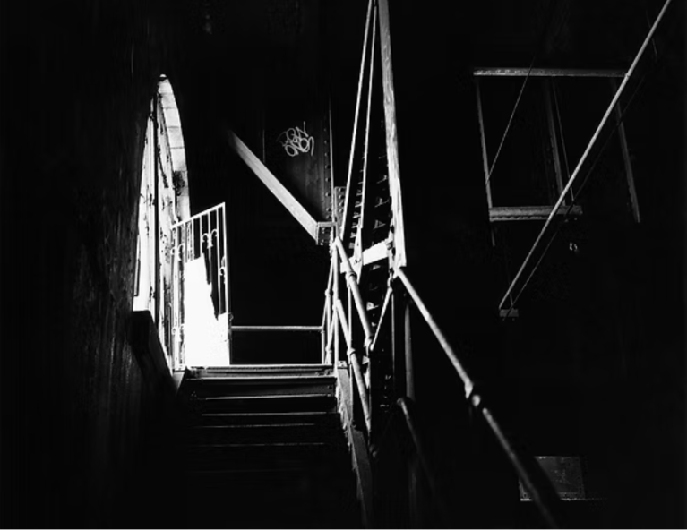
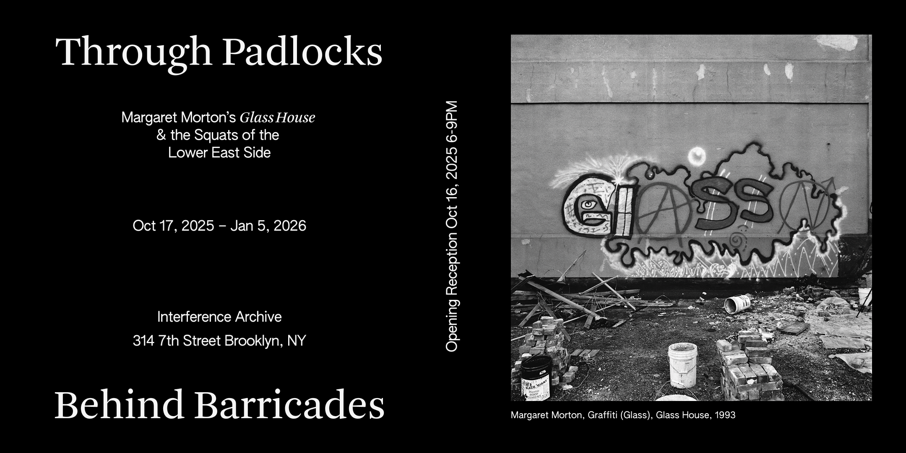
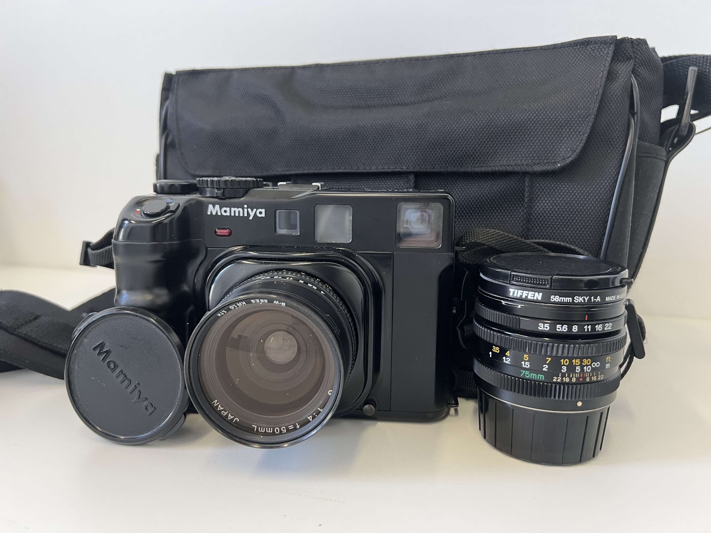
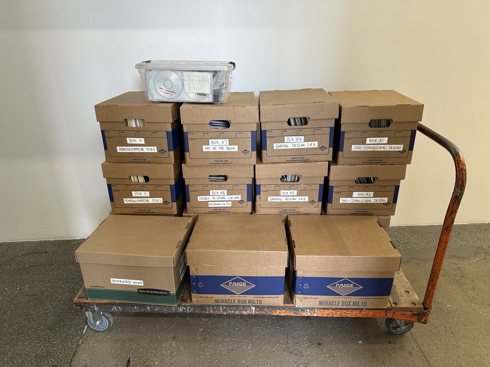

Event

May 17, 2026
Mana Contemporary Spring Open Studios
Podcast

Upcoming
On This Spot: Margaret Morton
Exhibition

October 17, 2025 - January 05, 2026
Through Padlocks, Behind Barricades: Margaret Morton’s Glass House and the Squats of the Lower East Side
Archive Donation

December 2025
The Margaret Morton Archive Donates Her Cameras to the Cooper Union
Archive Donation

March 15, 2024